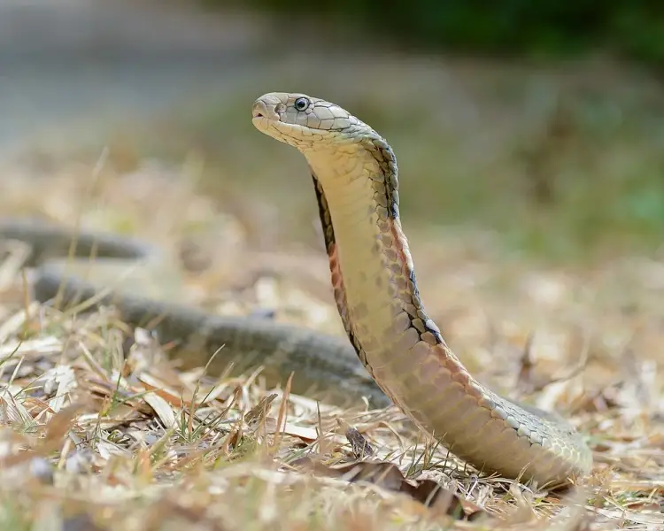

Komodo Dragon
The Komodo Dragon (Varanus komodoensis) is a large lizard native to Indonesia. It is a carnivore and can grow over 10 feet long, known for its venomous bite.
Read More
3 SPECIES
The Komodo Dragon (Varanus komodoensis) is a large lizard native to Indonesia. It is a carnivore and can grow over 10 feet long, known for its venomous bite.
Read More
The Black Mamba (Dendroaspis polylepis) is one of the deadliest snakes in Africa. It is highly venomous and can move at speeds of up to 12 mph.
Read More
The King Cobra (Ophiophagus hannah) is the longest venomous snake in the world. It can grow up to 18 feet and primarily feeds on other snakes.
Read More